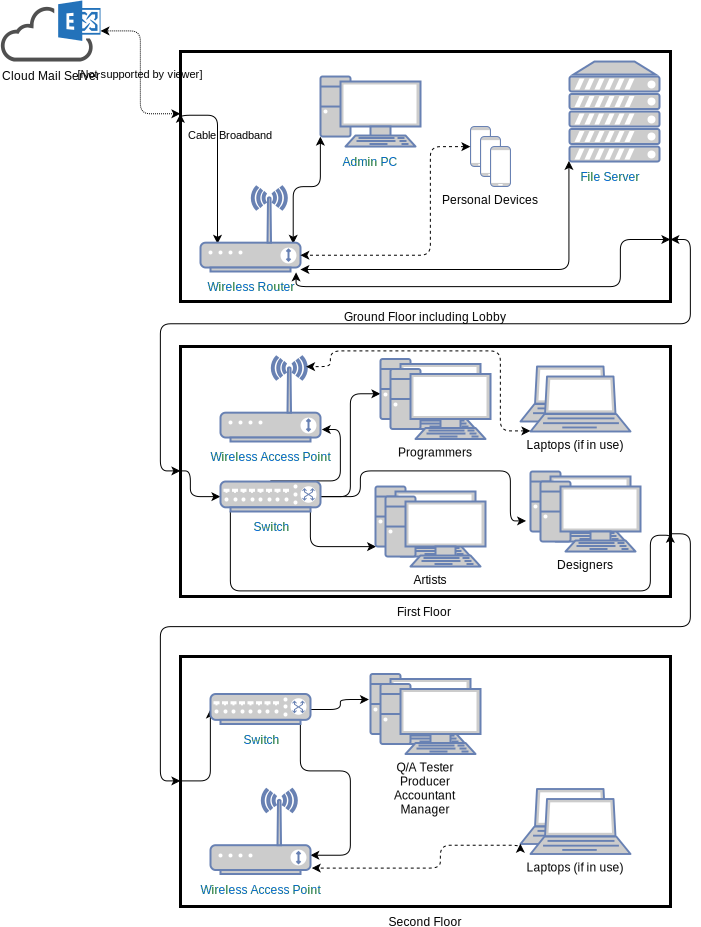

Networks SAC
SAC Number 2! This time, the task was to design a network for a fictional company.
- Identify the information needs of the organization and its members.
- The organisation requires access to email, general internet access, printer access, access to a shared file server, and preferably VPN access so that devices and servers on the LAN can be connected to remotely.
- Describe the purpose of the proposed network information system.
- The purpose of this system is to allow employees to access the internet, as well as to access various services important to the company, such as shared files and printers.
- Is it better to use a peer-to-peer or client-server network? Why?
- In this case, a client-server network will allow for simpler setup, and services such as the file sharing can be handled from a central location which keeps track of the latest version.
- Identify the data and information that would flow within the information system and the location in which the data would be stored.
- Large files will be transferred regularly, and this will be controlled by a central file server. Emails will be sent, and to avoid outages if the main network experiences issues, this can be controlled by a third party email server.
- Identify which portable computers or devices are required to use the network.
- Employees will have an opportunity to connect their mobile devices to the network to allow internet access without using their own mobile plan. Any employees who bring their own laptop to use for work, rather than using a desktop with ethernet will also be setup on the network.
- Determine if a wired/wireless connection will best serve each device and meet the users' needs.
- Because employees will connect to the network from their phones, there will need to be a wireless network, and because laptops are able to connect as well, this means the network must be accessible from all three floors.
- Identify the number of workgroups that will operate.
- The primary workgroups for sharing files and information will be Development (Programmers + Tester), Design (Artists + Designers), and Administrative (All others). In addition, all members will be able to communicate and share work across all groups.
- In which situations are routers or switches preferable?
- Often the router will be placed early in the network chain, to make it easy to connect a LAN to the internet. A switch, on the other hand, can be used to allow expansion of the routers ethernet ports to handle more devices, as many routers only have 4 ethernet ports available.
- What communications devices are needed?
- The communications devices in this design are: a router with built in wireless access, two standalone wireless access points to expand the network to the upper floors, connected to the main router via ethernet, two switches, one with 4 ports, and one with 16 ports. This gives every workstation the option of wired connection.
- If there is to be internet access, what transmission method do you recommend? Why?
- Cable provides a faster and more stable connection than alternatives such as ADSL2+, and would be more suitable for a business situation.
- Use a software tool to depict the components of the network and its interactions.
- 